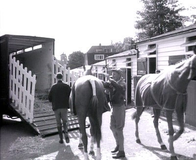
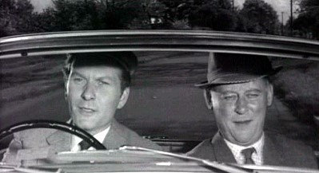
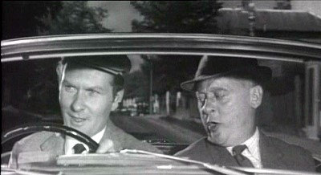
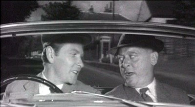
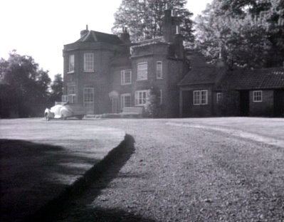
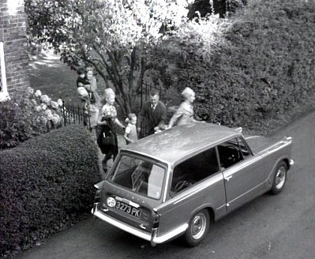
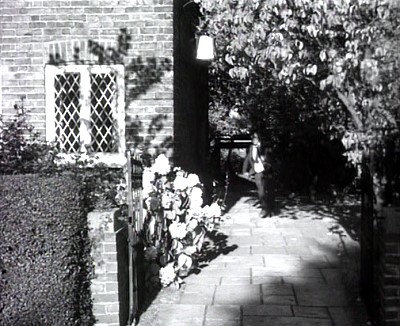

|
|
HELP FIND THE FOLLOWING LOCATIONS
PAGE 91
GIDEON’S WAY: The Big Fix (James Hill: September 1964)
Unknown 1- Jimmy Watson (Griffith Davies) leaves
the racecourse stables early. He is intercepted by Dandy Johnson (Brian Phelan)
who quizzes him about not fixing the race.

  

Unknown 3 - Colonel Aleck Middleton (Maurice
Hedley), Janet Middleton (Penelope Horner) and Jo Short (Michael Ripper), watch

Identified by Geoff Dodd, Novenber 2014

The Home of Rest for Horses was situated at the corner of Furzehill Road and Barnet Lane - Late at night at the Middleton stables Keen and Janet wait in Hilarion’s stall watching for signs of doping.

Unknown 4 – Jo Shorts cottage ‘near the Middleton place. Jo Short (Michel Ripper) is dropped off at his home by Dandy Johnson (Brian Phelan) after offering him money to dope a favourite. After the doping of Hilarion goes wrong Janet Middleton (Penelope Horner) helps Jo and his family including Mable Short (Margery Mason) and Alice Short (Sandra Payne) by driving them to safety. Jo is forced to run for his life when Dandy Johnson and his thugs arrive.
 


Think you know a spot? Need a bigger image? Email me.
< Previous | Index | Avengerland | Next >
Copyright © 2021 Anthony R. McKay